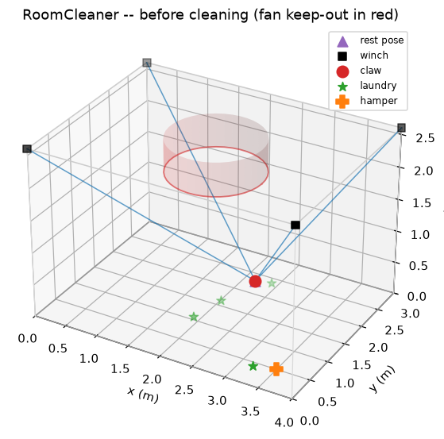
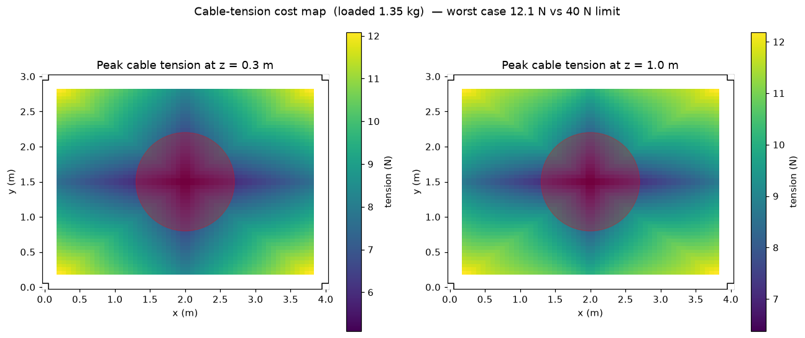

RoomCleaner — Autonomous Laundry-Picking Cable Robot
Four winch motors in the ceiling corners fly a claw around the room on cables — the same mechanism as a stadium SkyCam. An overhead camera scans the floor, a vision model spots the laundry, and the claw picks each item up and drops it in the hamper. I designed and built the whole stack: the kinematics and control software, the computer-vision pipeline, every 3D-printed part, and the motor firmware.
The showcase runs a live simulation of the control loop in your browser — drag the claw around, drop laundry on the floor, and explore the cable forces with real physics.
How It Works
A cable robot is beautifully simple: each cable's length is just the distance from its ceiling corner to the claw, so “go to (x, y, z)” converts directly into four spool lengths. The harder questions are where the robot can't go — cables can only pull, never push, so holding the claw anywhere means finding four non-negative tensions that cancel gravity. Solving that across the room gives the reachable workspace, the motor sizing, and a keep-out zone computed around the ceiling fan so no cable can ever touch it.


Seeing the Laundry
An open-vocabulary detector (YOLO-World) finds clothes by name — “sock”, “towel”, “jeans” — with no training, and a calibrated overhead camera maps each detection to a floor coordinate. The same planner that runs the simulator consumes those detections unchanged, so the day the camera went live the robot brain already knew what to do with it.
The Tentacle Gripper
Grabbing flat, crumpled cloth off a hard floor is the classic failure point of projects like this — a rigid claw has nothing to pinch. My answer is a ring of five tendon-driven TPU “tentacle” fingers that curl inward and gather the laundry toward the center, all closed by a single servo. The whole end-effector is wireless: an ESP32 and a battery ride on the claw and take grip commands over WiFi, so only the four cables touch it. Every part is modeled parametrically in code (CadQuery) and exports STEP + STL.

Engineering by Simulation
Every purchased part was sized by analysis before ordering: motor torque from the worst-case tension map, line strength from peak load, supply wattage from total draw, and a calibration study showing the ceiling anchors need to be measured to about a centimeter for centimeter-level grab accuracy. The physics is closed-form, so the design validates itself — the full build lands around $230 by reusing a computer for vision and 3D-printing everything printable.
Status
The complete software stack is built and tested — kinematics, vision pipeline, pickup planner, Arduino stepper firmware, and the wireless gripper firmware, with 29 passing tests and end-to-end simulation. Parts are ordered; hardware bring-up is next.
Top Skills Utilized
- Python
- Computer Vision
- Robot Kinematics
- CadQuery CAD
- Arduino / ESP32
- 3D Printing
- Simulation